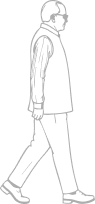
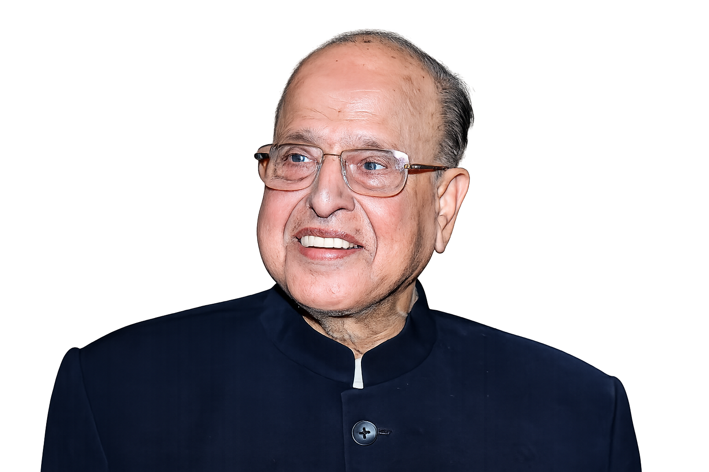

To propagate the ideals, vision and
life-values of Dr Krishnaswamy Kasturirangan through structured, excellence-driven, ethical and humane initiatives that inspire future humanity and sustainable actions
The Dr Kasturirangan Trust was constituted to commemorate the lifelong selfless service by K. Kasturirangan. His contributions across the domains of space, science and technology, education, environment and many other areas has helped shape modern India.
He leaves behind a spirit of Indianism rooted in inner quest, rightful discovery, committed hard work, and compassion for every human being. He consistently emphasised rigorous inquiry, wide consultation, problem solving, and humane consideration – qualities that reflected a distinctive systems thinking, anticipated scientifically grounded future action and recognised the interconnectedness of institutions and ideas. His forward-looking approach helped bring together knowledge, research, education, and governance in service of a larger public good.
Go through this timeline to learn more about his life.

The Trust is guided by the vision, values and philosophy of K. Kasturirangan – uniting curiosity with understanding, scientific rigour with ethical responsibility, and envisioning future systems grounded in human values.
How can discovery be guided by integrity?
How can knowledge improve lives?
How can we excel without losing our humanity?
How can human progress and nature coexist?
The Trust is a living institution of people active in diverse domains that shaped K. Kasturirangan’s remarkable life.
Satellite applications and space technology for the benefit of humankind
Revolutionising learning systems and research frameworks
Environmental
consciousness and urban/rural transformation
Cultivating leadership and ethical governance
Public Charitable Nature: A non-profit, non-political, and irrevocable organisation established for the public at large
Eminent Leadership: Governed by a Board of Trustees, Advisory Board and Executive Council representing experts and eminent persons from diverse backgrounds in science, academia, and civil service
Strict Ethics and Compliancy: Unwavering commitment to integrity, ethical conduct, and compliance with human values, societal expectations, and national and international laws and standards
Applicable laws include the Indian Trusts Act
The Trust will partner with government institutions, private enterprises, and nonprofit organisations in India and around the world that share its commitment to scientific excellence and the betterment of humanity.
— Trustees@drkasturirangantrust.org
Registered Office:
Alder 1002, Godrej Woodsman Estate, Hebbal, Bengaluru – 560045
Sanjay Rangan | sanjay.rangan@drkasturirangantrust.org
Mukund Rao | mukund.rao@drkasturirangantrust.org
Anurag Behar | anurag.behar@drkasturirangantrust.org